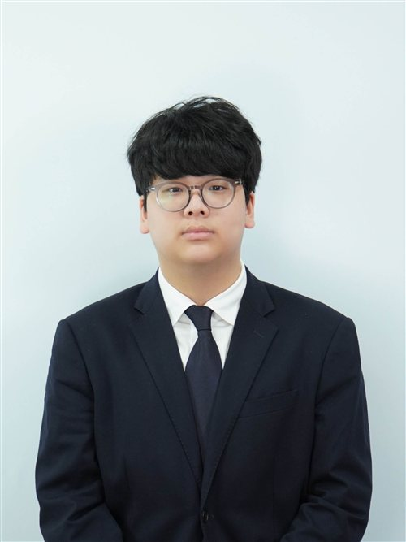
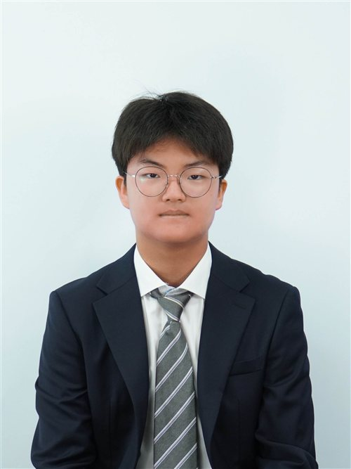

Honorable delegates, chairs, staff, and directors, welcome to KISMUN 2026. I am Janghyun Kim, the Head Chair of the Historical Security Council. It is a great honor to serve as your chair, and an even greater one to stand before a room of voices waiting to be heard.
History has never been written by those who stayed silent. Every turning point in your own future will start when you believe that what you have to say is worth saying. That is the heart of this year's conference slogan: 'Value Your Voice, Voice Your Value'.
This committee asks something rare of its delegates. We will step into the shoes of those who shaped it, and decide whether history bends the same way twice. Over the three days of this conference, we will write our own story. So bring your passion, your conviction, and your voice. Let this council be the place where you learn what your voice is worth, and how much it can change.
Once again, welcome to KISMUN 2026. Let us write this chapter of history together.
With gratitude,
Janghyun Kim
Head Chair of the Historical Security Council
KISMUN 2026

Honorable chairs, delegates, staff and respected directors, I am Jeongin Son, the Deputy Chair of HSC. It's my true honor to serve as your chair and to welcome you all to KISMUN 2026.
My MUN journey started back in 2023, when I was just 13 years old, and the first MUN conference was KISMUN 23. Personally, when I first participated in the MUN conference, I experienced many challenges that I believed would never be solved, I was a delegate who was always afraid to make speeches and give a poi's in worry of "what if I make a mistake".
But conference after conference, I slowly learned that mistakes were never something to be afraid of. Instead, that was simply a part of growing into a better delegate. Every speech I gave taught me something new.
This is exactly the spirit I hope to bring into HSC this year. I want this committee to be a place where delegates feel safe to speak, to try new things, and even to make mistakes without fear about anything. I believe that a committee grows the most when every delegate feels comfortable enough to participate actively.
Best regards,
Jeongin Son
Deputy Chair of Historical Security Council
KISMUN 2026